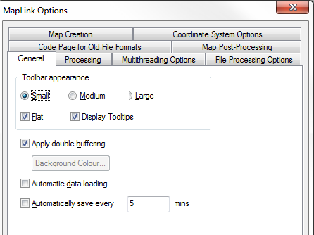
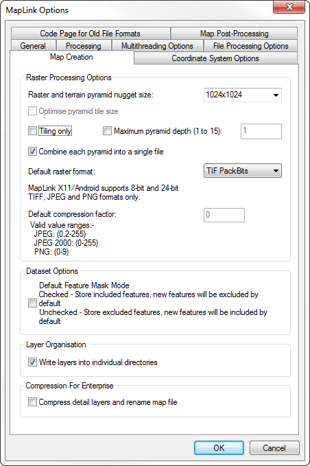
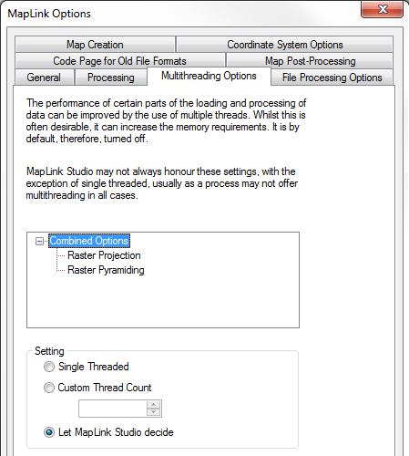
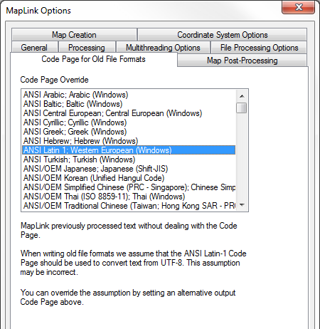
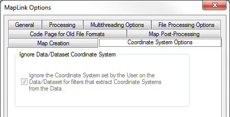

General Options
The following options allow you to customise the appearance and behaviour of MapLink Pro Studio. The current settings of the various options are saved on exiting from MapLink Pro Studio and will be used again the next time MapLink Pro Studio is started.
Processing Options
The following options affect the manner in which MapLink Pro Studio handles the processing of input data files.

File Processing (Vector Filter) Options

The following options affect the manner in which MapLink Pro Studio handles the processing of input Vector Filter data files.
Map Creation
The following options affect the manner in which MapLink Pro Studio creates maps.
Multithreading Options
The following options affect the performance of certain parts of the loading and processing of data.
Code Page for Old File Formats
MapLink Pro previously processed text without dealing with the Code Page. When writing map formats older than 8.0 it is assumed that the ANSI latin-1 Code Page should be used to convert text from UTF-8. This assumption may be incorrect. The assumption can be overridden by setting an alternative output Code Page on this tab.
Map Post Processing
MapLink Pro provides a number of post processing options for those using the OpenGL Drawing Surface and the TSLStaticMapDataLayer.
The options that are available are described in the following link:
Coordinate System Options
Reserved for future use.
Copyright © 1998 to 2025 by Envitia Group PLC.